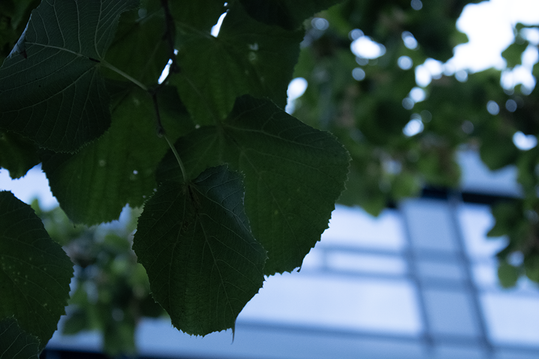

Dette bildet har liten dybdeskarphet.
Metadata: F5,6 iso1600 1/250 lukkertid.
Metadata: F5,6 iso1600 1/250 lukkertid.
Metadata: F29,0 iso1600 1/100 lukkertid.
Metadata: F5,6 iso1600 1/500 lukkertid.
Metadata: F32,0 iso 100 0.4 lukkertid.
Metadata: F5,6 iso1600 1/500 lukkertid.
Metadata: F8,0 iso400 1/400 lukkertid.